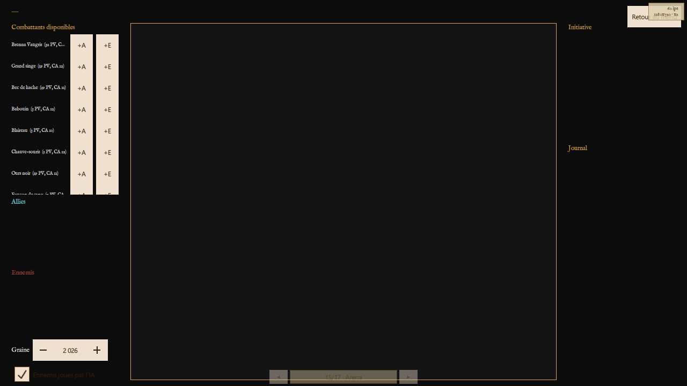
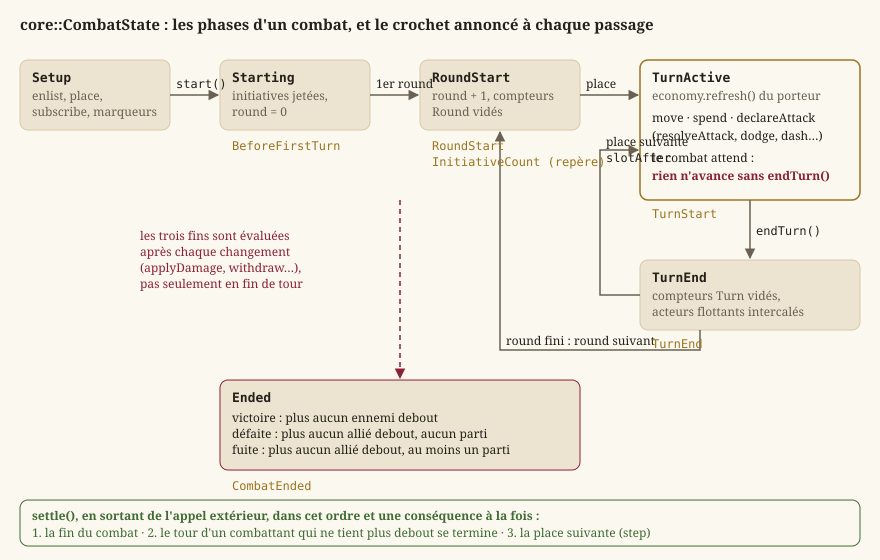
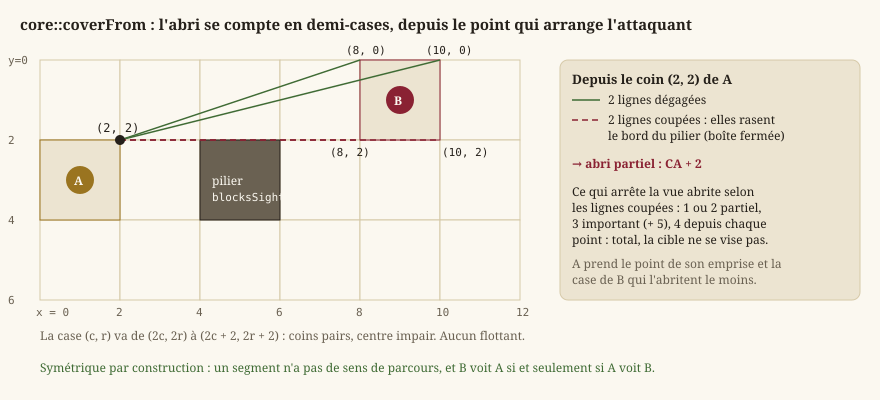
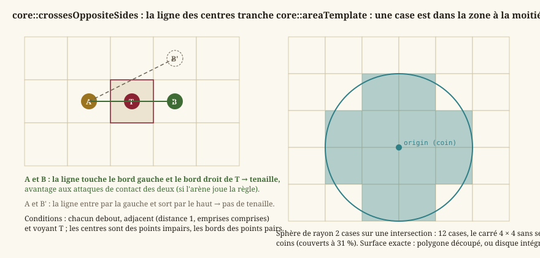
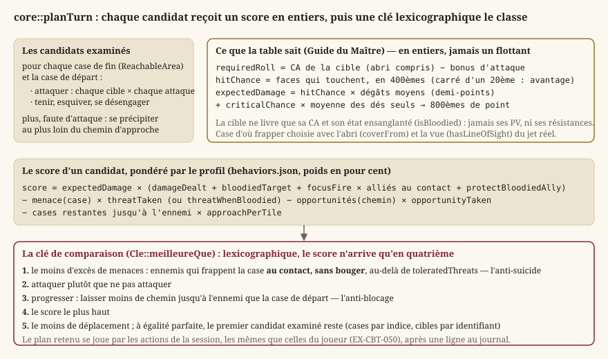
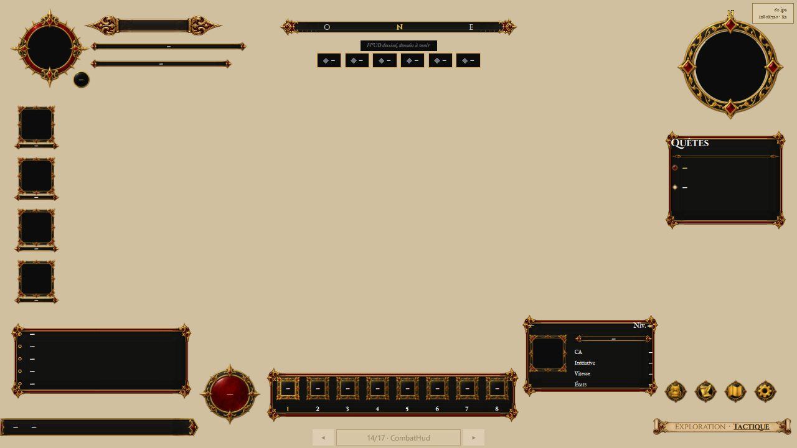

Combat tactique
Le combat est la moitié « au tour par tour » du jeu : le temps s'arrête, chacun joue à son rang, et l'espace se compte en cases. Tout ce qui le décide vit dans Source/Core/Combat/ — dix-huit en-têtes de Core pur, sans Qt ni GPU (EX-NFR-010), que cette page parcourt dans l'ordre d'un combat : le montage d'une rencontre, la grille, l'initiative, le tour et son économie, le déplacement, l'attaque et les dégâts, la géométrie (portée, ligne de vue, abri, zones, tenaille), la prévisualisation, l'IA, puis l'arène du Colisée qui est aujourd'hui le seul lieu où ce combat se joue. Ce que l'écran en montre est renvoyé à Rendu 2D et Écrans ; les règles du d20 lui-même, à Règles d20.
{kind=link}

Définitions
Un combat tactique au tour par tour
Dans un jeu de rôle « à la d20 », un combat n'est pas une simulation continue mais une suite de rounds : pendant un round, chaque combattant joue un tour, dans un ordre fixé au début du combat par un jet d'initiative. Un tour offre une économie d'actions — une action, une action bonus, une réaction et un déplacement (EX-CBT-011) — et se termine quand celui qui joue le décide (EX-CBT-012). Le combat prend fin quand l'un des deux camps n'a plus personne debout, ou que le camp du joueur a rompu le contact.
L'espace est une grille de cases carrées de 1,5 m (EX-REG-051), dérivée de la couche de collision de la carte d'exploration : le combat se joue au même endroit, seul le temps change (EX-CBT-001). Une créature occupe une emprise carrée de une à quatre cases de côté selon sa taille ; un déplacement se paie en cases, sur un chemin qui contourne les murs (EX-CBT-020) ; une attaque suppose d'être à portée et, pour une attaque à distance, d'avoir une ligne de vue (EX-CBT-021, EX-CBT-022). C'est le programme d'EX-VIS-004, et la spécification du combat en détaille chaque terme.
Ce que le dossier contient
| En-tête | Ce qu'il porte | Lot |
|---|---|---|
Encounter.h, CombatTransition.h | la rencontre (qui, en quelle formation) et l'aller-retour exploration ↔ combat | LOT-18 |
TacticalTerrain.h | le verdict de l'éditeur : la rencontre tient-elle sur le terrain ? | LOT-11, LOT-EDITOR-07 |
BattleGrid.h, Pathfinding.h | la grille (obstacles, emprises, objets, zones) et le déplacement par budget | LOT-19 |
TurnOrder.h, ActionEconomy.h, CombatCounters.h, CombatState.h | l'initiative, les ressources du tour, les mémoires à portée, la machine à états | LOT-20 |
Attack.h, Damage.h | le jet d'attaque amendable et le pipeline de dégâts | LOT-21 |
LineOfSight.h, AreaOfEffect.h | ligne de vue, abri, zones d'effet | LOT-22 |
EnemyAi.h, Flanking.h | l'IA tactique et la prise en tenaille | LOT-23 |
CombatPreview.h | ce que l'écran montre avant que le joueur ne s'engage | LOT-24 |
Arena.h, IsoProjection.h | le Colisée : session rejouable, et la projection isométrique de sa grille | LOT-50 |
Chaque en-tête cite la page du Manuel des Joueurs ou du Guide du Maître qui fonde ses règles, et nomme ce qu'il décide au-delà du livre : cette page reprend ces décisions, sans recopier les fiches de lots qui les ont tranchées.
Le montage : de la rencontre à la grille
La rencontre : qui, et en quelle formation (Encounter.h)
Une core::Encounter dit qui se dresse et comment (combatants, une liste de core::EncounterCombatant), jamais où : chaque combattant porte un identifiant de créature du bestiaire (LOT-33) et un décalage en cases par rapport au déclencheur (columnOffset, rowOffset). Une rencontre écrite une fois se joue donc partout où un déclencheur la pose, en gardant sa formation ; des coordonnées absolues auraient fait apparaître les mêmes gobelins au même endroit de toute carte, ou hors de la carte. Le drapeau escapable — vrai par défaut — est une décision de contenu : un combat de scénario dont on ne fuit pas s'écrit dans la donnée, et l'inverse enfermerait le joueur dans toute rencontre qu'un auteur aurait oublié de renseigner.
core::loadEncounters(dossier)lit un fichier JSON par rencontre (Rpg/encounters/), triés par nom, et rend uncore::EncounterCatalog: les rencontres lues, et les erreurs nommées. Une rencontre sans combattant est refusée : elle se déclencherait et se terminerait aussitôt par une victoire, en posant son drapeau — l'ennemi disparaîtrait sans combat et rien ne le dirait.core::EncounterCatalog::find(id)rend la rencontre, ounullptr.core::placeCombatants(rencontre, déclencheur)est pure : elle rend la liste des cases voulues (core::CombatantPlacement) sans consulter ni carte ni collision. C'est au montage de refuser celles qui tombent dans un mur, et il ne peut le faire que s'il les reçoit toutes.
L'aller-retour exploration ↔ combat (CombatTransition.h)
EX-CBT-001 veut un passage explicite et réversible, et le LOT-18 l'a voulu pur : rien de ce qui décide n'est dans un widget, ce qui rend l'aller-retour vérifiable sans fenêtre.
core::ExplorationSnapshotest ce qu'on met de côté : la position du personnage, son orientation (EX-EXP-004) et la caméra. Il ne porte pas les points de vie — ils sont précisément ce que le combat a changé, et les restituer annulerait le combat — ni les ennemis vaincus, qui ne se restituent pas mais s'acquièrent.capturedreste faux tant que rien n'a été relevé : restituer un instantané vide téléporterait le personnage à l'origine de la carte.core::CombatOutcomenomme les trois issues :Victory,Flight,Defeat.core::EncounterRunest la rencontre engagée : l'instantané, l'identifiant, les placements calculés,escapablerecopié, etdefeatFlagKey— la clé de drapeau de monde qu'une victoire posera, vide pour une zone de rencontre qui doit pouvoir se reproduire.core::beginEncounter(rencontre, instantané, déclencheur, clé)construit ceEncounterRun;core::endEncounter(run, issue, drapeaux)rend l'instantané à restituer et, seulement en cas de victoire, pose le drapeau. Une fuite ou une défaite ne marquent rien : sinon fuir suffirait à nettoyer une carte, et le défaut ne se verrait pas — une carte qui se vide ressemble à une progression.core::encounterAlreadyCleared(drapeaux, clé)répond non pour une clé vide : l'inverse désactiverait toutes les zones de rencontre du jeu dès le premier combat gagné.core::encounterTriggerFor(entité, carte)lit une entitéencounterde la carte comme uncore::EncounterTrigger. Deux natures, distinguées par la donnée et non par le type : un ennemi posé reçoit une clé fabriquée parcore::keyForEntity(jamais écrite à la main, sinon deux ennemis finiraient par la partager) ; une zone (respawns: true) n'en a pas. Un déclencheur qui ne nomme aucune rencontre n'en est pas un.
Côté exploration, core::ExplorationSession produit un ExplorationEventKind::Encounter quand le héros interagit avec un tel déclencheur (Monde et exploration) ; c'est l'appelant qui monte alors le combat. Le mode hmi::CombatMode du LOT-18, qui gelait les passes de l'ancienne exploration, n'existe plus (LOT-88, LOT-102) : dans le jeu Qt Quick, le seul combat ouvert est celui du Colisée, et brancher une rencontre de carte reste dû au LOT-27.
Le terrain est-il jouable ? (TacticalTerrain.h)
Comme le combat se joue sur la carte d'exploration, une rencontre posée dans un couloir d'une case ne se découvrirait qu'en jeu. core::analyzeEncounterTerrain(collision, entités, catalogue, bestiaire) le dit à l'auteur au moment où il pose : pour chaque entité encounter dont la rencontre est connue, un core::EncounterTerrain — les placements voulus, la zone atteignable autour du déclencheur, le nombre de cases exigé, et les problèmes (core::TacticalIssue, des codes core::TacticalIssueCode et jamais du texte, EX-NFR-011). Les combattants sont posés sur une core::BattleGrid par place, dans l'ordre de la formation, exactement comme le fera le montage : un avertissement de l'éditeur et un refus au montage ne peuvent pas diverger. Trois constantes sont des décisions nommées, réglables : TACTICAL_PARTY_SIZE (4, le groupe pour lequel le Guide calibre ses rencontres), TACTICAL_AREA_RADIUS (6 cases, ce qu'un combattant de taille M parcourt en un tour) et TACTICAL_CELLS_PER_COMBATANT (4 : se tenir, et manœuvrer). L'éditeur l'appelle dans son contrôle du contenu (LOT-EDITOR-07, Éditeur de niveaux).
La grille (BattleGrid.h)
core::BattleGrid répond à une seule question, « peut-on se tenir ici ? », et à rien d'autre : elle ne calcule aucun chemin, ne connaît aucun camp, n'a pas d'altitude.
core::CombatantIdest un type fort, pas unint: la grille ne sait rien de ce qu'est un combattant, elle retient sa place ; c'estcore::CombatStatequi attribue les identifiants, et un entier nu se serait confondu avec un indice de case à la première signature qui prend les deux.core::footprintSide(taille)traduit la table des tailles du Manuel : 1 case jusqu'à M, 2 × 2 pour G, 3 × 3 pour TG, 4 × 4 pour Gig. Une très petite créature occupe une case entière là où le livre en tolère quatre : c'est le critère duLOT-19— deux créatures ne partagent jamais une case —, à rouvrir par une exception nommée si un contenu le réclame.core::Locomotion(Walk,Fly) : l'altitude est un attribut, jamais une géométrie. La grille n'a pas de hauteur ; un volant franchit les obstacles au sol (eau profonde, falaise) et ignore le terrain difficile, mais pas la matière pleine — la grille de collision ne distingue pas un muret d'un rempart —, et occupe sa case comme tout autre.core::Cover: les trois abris du Manuel et l'absence d'abri, ordonnés du moins au plus protecteur, parce que « seul celui qui protège le plus est pris en compte » et que comparer deux abris est ce que cette règle demande.core::GridObject: une toile, une barricade, posée sur une case. Elle a des points de vie (le corpus en donne), unblocksMovement, un abri déclaré (cover, jamais déduit dekind, que la grille n'interprète pas) et desdamageTraits— une porte de fer ne craint pas le poison.core::PlacementResult:Placed,OutOfBounds,Obstructed,Occupied,InvalidCombatant.
Les constructeurs recopient la grille de collision de la carte — core::Level::tileMap(), ou une grille dérivée comme une zone de combat découpée — parce qu'une copie ne peut pas changer sous un tour en cours ; les obstacles n'ont jamais d'autre source (EX-CBT-001). Avec un Level, ils relèvent aussi les zones : les cases non vides d'une couche à propriétés libres (EX-LVL-018), et les entités zone (rectangle ou cases peintes, core::zoneCells). La grille n'interprète qu'une propriété, difficultTerrain — vraie seulement pour le booléen true, un 1 ou un "oui" étant une faute de saisie qu'il ne faut pas transformer en règle.
| Fonction | Rôle |
|---|---|
inBounds, width, height | les bornes. |
isObstructed(case, locomotion) | matière pleine, objet bloquant, et — au sol seulement — eau profonde et falaise. Hors carte : plein, pour qu'un appelant qui oublie la borne se heurte à un mur plutôt que de lire hors du tableau. |
isDifficult(case), setDifficult | le coût double d'entrée ; modifiable en combat (un séisme, un sort). |
blocksSight(case) | ce qui arrête la vue : matière pleine ou objet à abri total. L'eau et la falaise arrêtent la marche, pas le regard ; hors carte, faux. |
objectCoverAt, objectAt, placeObject, damageObject | les objets : posés sur une case ouverte et libre, détruits à 0 PV — la case redevient franchissable. |
zonesAt(case) | les propriétés de toutes les zones qui couvrent la case, dans l'ordre des couches puis des entités ; les autres règles de zone sont lues par qui en a l'usage (LOT-50, LOT-81). |
place(id, ancre, côté, locomotion) | pose une emprise. Refuse plutôt que de corriger : une case voulue qui tombe dans un mur est une information pour le montage, et la déplacer d'office cacherait une formation mal écrite. Un marcheur ne se pose pas sur l'eau profonde ; un volant, si. |
moveTo(id, ancre) | déplace une emprise déjà posée, sans vérifier ni chemin ni budget (l'appelant l'a fait par ReachableArea) ; une créature de 2 × 2 qui avance d'une case recouvre la moitié de son ancienne emprise et ne se gêne pas elle-même. |
remove, occupantAt, positionOf, sideOf, combatants | l'occupation, par identifiant croissant — les conteneurs sont ordonnés pour qu'un parcours donne le même ordre d'une partie à l'autre. |
canStand(ancre, côté, soi, locomotion), isClear | l'emprise tient-elle : bornes, obstacles, et — pour canStand — aucun autre combattant que soi. |
Enrôler et poser : core::CombatState::enlist et core::mountEncounter
Un combattant entre dans le combat sous la forme d'un core::CombatantProfile — ni fiche ni bloc de bestiaire, mais ce que le combat doit savoir : nom, camp, PV, Dextérité et modificateur d'initiative, budget de déplacement, locomotion, taille, classe d'armure, affinités aux dégâts, et floating pour un acteur hors de l'ordre. core::profileFor(fiche) et core::profileFor(créature) le construisent : c'est ce qui garde la machine indifférente à « qui est le joueur ». Une créature vole si sa vitesse de vol dépasse sa vitesse de marche ; une fiche est de taille M tant qu'elle n'en porte pas. La classe d'armure y est recalculée depuis ses sources au moment de la construction (EX-CBT-030) et jamais tenue à jour à la main : ce qui la change en combat — un abri, une posture — s'ajoute au jet, pas à ce nombre.
enlist(profil, ancre) n'est permis qu'en phase Setup et attribue les identifiants dans l'ordre des enrôlements, à partir de 1 : c'est l'ordre de la donnée, dernier critère de départage de l'initiative. Un placement refusé n'enrôle personne et ne consomme aucun identifiant. core::mountEncounter(combat, run, bestiaire, groupe) enchaîne : setEscapable recopié de la rencontre, le groupe (core::PartyMember) puis les créatures, et rend un core::EncounterMount — alliés, ennemis, et chaque core::MountRefusal avec sa raison (placement vide pour une créature inconnue du bestiaire). Un combattant refusé n'est pas enrôlé : sans case, il ne combat pas.
Le cycle d'un combat
{kind=link}

L'initiative (TurnOrder.h)
L'initiative est un test de Dextérité, jeté une fois à start (EX-CBT-010) : l'ordre ne bouge plus, même si la Dextérité d'un combattant change ensuite — tout ce qui sert au départage est recopié dans l'core::InitiativeEntry au moment du jet.
core::CombatSide:Allies,Enemies. Deux camps et aucun héros : rien dans l'ordre ni dans la machine ne distingue « le » joueur, ce qui fera du groupe (LOT-29) un ajout et non une refonte.core::actsBefore(a, b)est la règle de départage, écrite parce que le jeu n'a pas de MD et qu'EX-CBT-010interdit de s'en remettre à l'ordre en mémoire : le total le plus haut, puis le modificateur d'initiative, puis la Dextérité, puis les alliés avant les ennemis (la part du MD « entre un monstre et un personnage », tranchée en faveur du joueur), puis l'identifiant le plus petit. La relance d'un d20, que le livre laisse au MD, est écartée : un tirage de plus consommerait la suite aléatoire, et l'ordre dépendrait du nombre d'égalités survenues.core::InitiativeMarker: un repère fixe qui n'est pas un combattant — actions de repaire au rang 20, renforts au rang 0. Il perd toujours l'égalité contre un combattant ; deux repères de même rang se rangent par nom.core::TurnSlot: une place du round, combattant ou repère, qui porte tout ce qui la range. Une place reste comparable après que son combattant a quitté l'ordre — ce qui permet de calculer la suivante quand le combattant actif vient de fuir.slotBeforecompare deux places.core::TurnOrder:add,remove,addMarker(refusé pour un doublon rang + nom),contains,find,entries,markers, et les deux qui font tourner le round :firstSlotetslotAfter(place). Le curseur est une place, pas un indice : un renfort allonge l'ordre, un fuyard le raccourcit, et un indice sauterait un tour ou en rejouerait un. Un renfort rangé après la place courante joue ce round-ci, rangé avant, au round suivant — ce que dit le livre, sans cas particulier.
La machine à états (CombatState.h)
core::CombatState tient un seul état nommé (core::CombatPhase) plutôt que des drapeaux épars dont une combinaison sur deux n'aurait pas de sens : Setup (on enrôle), Starting (initiatives jetées, premier round pas commencé — la fenêtre d'avant le premier tour), RoundStart, TurnActive (un combattant joue et le combat attend), TurnEnd, Ended. Elle n'est ni copiable ni déplaçable : les core::Mover qu'elle construit et les abonnés la désignent par son adresse.
Les crochets. core::CombatHook nomme onze points d'insertion — BeforeFirstTurn, RoundStart, InitiativeCount, TurnStart, TurnEnd, AttackDeclared, DamageTaken, CombatantDowned, CombatantJoined, CombatantLeft, CombatEnded. Aucun n'avait de consommateur au LOT-20 et tous en auront un : les livres de Tanares placent une capacité à chacun de ces instants, et les poser après coup aurait coûté une refonte. Un abonné (core::CombatListener) reçoit un core::CombatEvent — round, combattant, cible, nom du repère, et pour les dégâts les PV avant et après, le maximum, l'excédent et le drapeau critique — et l'état mutable : il peut infliger des dégâts, faire entrer un renfort, octroyer une ressource. Il ne peut pas terminer un tour : la fin d'un tour est la décision de celui qui joue (EX-CBT-012). core::crossedBelow(événement, n, d) dit qu'un seuil a été franchi (« sous 50 % » s'écrit (e, 1, 2)), pas seulement qu'on est dessous : une créature déjà sous la moitié qui reprend un coup ne redéclenche pas sa Battle Fury.
Les conséquences en cascade. Un abonné peut changer l'état pendant qu'on l'avertit. Ces conséquences ne sont jamais tirées au milieu d'une annonce : la classe interne Operation tient la profondeur d'appel, et settle règle tout en sortant de l'appel extérieur, une conséquence à la fois et dans un ordre fixe — la fin du combat, puis le tour d'un combattant qui ne tient plus debout, puis la place suivante. Sans cette discipline, un renfort appelé au repère « renforts » aurait ouvert son tour pendant l'annonce du repère, et deux abonnés du même crochet auraient vu deux états différents. start et endTurn sont refusés depuis un abonné.
Les trois fins, évaluées après chaque changement et non en fin de tour — un combat gagné par une attaque d'opportunité pendant le tour d'un ennemi est gagné tout de suite : victoire si plus aucun ennemi n'est debout (à terre, ou parti — un ennemi en fuite n'est plus « engagé », EX-CBT-001) ; défaite si plus aucun allié n'est debout et qu'aucun n'est parti ; fuite si plus aucun allié n'est debout et qu'au moins un est parti — ceux qui restent à terre derrière lui sont l'affaire de l'agonie (LOT-72). Si un même changement abat les deux camps, la défaite l'emporte.
Les fonctions, dans l'ordre d'un combat :
| Fonction | Rôle et invariants |
|---|---|
enlist, addInitiativeMarker, setEscapable, subscribe | le montage (ci-dessus). Deux abonnés d'un même crochet sont avertis dans l'ordre de l'abonnement ; un abonné qui s'abonne pendant une annonce ne l'est que pour la suivante. |
start(random) | jette l'initiative de chacun par identifiant croissant (à graine égale, les mêmes dés tombent sur les mêmes combattants), sauf des acteurs flottants ; annonce BeforeFirstTurn, puis ouvre le premier round. Faux hors Setup. |
phase, round, activeCombatant, turnOrder, outcome, escapable, find, combatants, grid | la lecture ; round vaut 0 avant le premier ; grid() mutable existe pour ce qui change la grille en combat (terrain difficile créé, objet détruit). |
counters() | les core::ScopedCounters du combat : la portée Turn est vidée à chaque fin de tour, Round à chaque début de round, Turn, Round et Encounter à la fin ; Day jamais. |
economy(id) | l'économie d'un combattant, pour dépenser une réaction hors de son tour ou octroyer une ressource. |
spend(ressource, n) | dépense sur le combattant actif ; faux sans tour ou sans reste. |
reachableArea() | la core::ReachableArea du combattant actif sur ce qui reste de son déplacement ; vide sans tour ou s'il n'est pas placé. |
move(destination) | suit pathTo, paie le coût, déplace l'emprise ; core::MoveOutcome dit Moved, NoActiveTurn, NotPlaced ou Unreachable. Le déplacement se fractionne : trois cases, une attaque, trois cases. |
endTurn() | termine explicitement le tour ; annonce TurnEnd, vide Turn, puis la machine cherche la place suivante. |
interject(id) | un acteur flottant (Law of Time, CombatantProfile::floating) demande à jouer avant le prochain tour, une fois par round ; s'il ne choisit pas, il joue en fin de round — un acteur indécis ne perd pas son tour. |
declareAttack(attaquant, cible) | annonce AttackDeclared avant tout jet : la fenêtre où une posture répond à l'intention. Refusé si l'un des deux n'est pas debout — une cible à terre n'est pas attaquable. |
join(profil, ancre, random), joinAtInitiative(profil, ancre, rang) | un renfort, en cours de combat, au jet ou à une initiative imposée (« au rang 0 ») ; annonce CombatantJoined. |
withdraw(id) | la sortie : quitte la grille et l'ordre, sans retour ; NotEscapable pour un allié d'une rencontre dont on ne fuit pas. Un combattant qui sort pendant son tour voit son tour terminé, TurnEnd annoncé quand même — les actions légendaires ne distinguent pas un tour fini d'un tour interrompu. |
applyDamage(id, n), applyDamage(span) | la dernière étape du pipeline (LOT-21) : borne à 0, met à terre, annonce DamageTaken puis CombatantDowned. La version à salve n'évalue l'issue qu'une fois : une boule de feu qui abat le dernier allié et le dernier ennemi est une défaite, pas une victoire ou une défaite selon l'ordre des cibles. |
heal(id, n) | rend des PV sans dépasser le maximum, relève un combattant à terre ; les réserves ne se soignent pas. |
grantReserve(id, réserve), reserves(id) | une réserve qui ne se cumule pas remplace celle de même source si elle est plus grande, et est ignorée sinon. |
moverFor(id) | le core::Mover du combattant, droit de passage compris : on traverse un allié, et un ennemi seulement à deux catégories de taille d'écart (Manuel, « Se déplacer au milieu d'autres créatures »). |
Un combattant à terre (core::CombatantStatus::Down) garde sa place et ses tours sont passés ; relevé, il rejoue à sa place. Withdrawn a quitté la grille et l'ordre. Les jets contre la mort, l'inconscience et la mort instantanée (EX-CBT-040, EX-CBT-041) sont au LOT-72, qui lira l'excédent et le critique que CombatEvent rapporte déjà.
L'économie d'action (ActionEconomy.h)
core::ActionEconomy est une liste de core::ActionResource (id, perTurn, remaining), pas trois booléens : le Manuel donne quatre ressources (ACTION_RESOURCE, BONUS_ACTION_RESOURCE, REACTION_RESOURCE, MOVEMENT_RESOURCE en cases) et les livres de Tanares en ajoutent — la Heroic Action des Marques Héroïques (HEROIC_ACTION_RESOURCE, LOT-50) est une troisième économie d'action, et une capacité octroie une réaction à un allié. Une ressource de plus est un appel à declare.
standard(mouvement): l'économie du Manuel, tout disponible.declare(id, parTour): déclare, ou change ce qu'un tour restaure, et remplit. Une ressource déjà déclarée garde sa place : l'ordre est celui de la première déclaration, stable d'une partie à l'autre.has,remaining;spend(id, n): faux, et rien n'est dépensé, si la ressource est inconnue, s'il n'en reste pas assez ou sinn'est pas positif — on ne paie pas une case de terrain difficile à moitié.grant(id, n): un octroi au-delà deperTurn, valable jusqu'à la dépense ou au prochain début de tour du porteur ; une ressource inconnue est déclarée avec unperTurnnul, le temps de l'octroi. C'est ainsi que se précipiter double le déplacement du tour.refresh(): le début du tour du porteur, et rien d'autre (EX-CBT-011). Restaurer la réaction en fin de tour ferait qu'une réaction dépensée pendant le tour d'un ennemi reviendrait avant qu'il ait fini, et une attaque d'opportunité se jouerait deux fois dans le même round.
Les mémoires à portée (CombatCounters.h)
« Une fois par tour », « par rencontre », « immunisé 24 heures » : ce sont des compteurs que les capacités des livres supposent. core::ScopedCounters (increment, value, clear(portée)) range des compteurs nommés par core::CounterScope (Turn, Round, Encounter, Day) et par porteur — une chaîne, pas un CombatantId, parce qu'un compteur « par jour » survit au combat et que l'identifiant ne vit qu'une rencontre. Turn se compte pendant n'importe quel tour : une attaque sournoise portée par une réaction pendant le tour d'un ennemi en consomme l'usage. core::ImmunityLedger (grant, isImmune, expire) tient les immunités par couple (créature, source) — la même créature reste sensible à un autre dragon — avec une échéance en secondes de jeu (IMMUNITY_DAY_SECONDS), que l'horloge du LOT-70 fournira ; le registre ne lit aucune horloge.
Le déplacement (Pathfinding.h)
Le Manuel, « Jouer sur un quadrillage », fixe trois faits : entrer dans une case coûte 1, même en diagonale ; une case de terrain difficile coûte 2, et il faut de quoi la payer ; on ne passe pas en diagonale par le coin d'un mur. La case d'une créature qu'on traverse coûte aussi double, en vol comme au sol — c'est la créature qui gêne, pas le sol. Un parcours en largeur à quatre voisins et coût uniforme ne sait exprimer aucun des trois ; le calcul est donc un Dijkstra sur les huit voisins (algorithme de plus court chemin à coûts positifs), et le coin d'un mur se juge comme en vol : seule la matière qui remplit l'espace l'interdit, longer une mare en diagonale est permis.
core::movementBudget(mètres)divise par 1,5 (EX-REG-051) et tronque : le livre dépense la vitesse « par segments de 1,50 mètre », et un segment entamé n'en est pas un — arrondir au plus proche ferait gagner une case à qui porte trop. Une tolérance d'un millième empêche l'inverse (5,9999 après une soustraction de flottants). Les surcharges prennent une fiche (speedMeters) ou une créature et sa locomotion (0 pour qui ne vole pas).core::Mover: qui se déplace, comment, et à travers qui (canPassThrough). Le combattant doit être placé : départ et emprise sont lus de la grille, jamais recopiés, pour qu'une requête ne parte pas d'une case déjà quittée. Vide,canPassThroughne laisse traverser personne — le parti prudent.core::Path: les cases franchies, départ exclu, arrivée incluse, et le coût.core::ReachableArea(grille, mover, budget)explore à la construction et ne relit plus la grille.costTo(ancre)est défini aussi pour une case qu'on traverse sans pouvoir s'y arrêter ;canEndAt(ancre)dit qu'on peut y finir (dans le budget, place libre, jamais le départ) ;destinations()les liste par indice croissant — ce que l'écran surligne (EX-CBT-020) ;pathTo(ancre)rend le chemin, ou rien. Une case difficile à une case du bout du budget reste hors de portée, pas « à moitié » atteinte.core::findPath(grille, mover, destination): le même calcul en A* (Dijkstra guidé par une estimation, ici la distance de Tchebychev, cohérente puisque chaque pas coûte au moins 1), sans limite de budget, pour qui planifie au-delà du tour — l'IA qui marche vers une cible lointaine.
Le départage est une règle, pas un hasard. Deux chemins de même coût existent presque toujours, et il fallait une règle qui tienne les deux algorithmes d'accord : parmi les prédécesseurs qui atteignent une case à son meilleur coût — l'exploration les retient tous, un bit par voisin —, la remontée retient le plus proche de la droite qui joint le départ à l'arrivée, et à égalité celui d'indice de case le plus petit. La règle se définit sur le graphe, pas sur l'ordre d'exploration ; le chemin ne monte donc pas pour redescendre, et c'est lui que la prévisualisation dessine. Pour que l'A* voie tous ces prédécesseurs, il ne s'arrête pas à la première sortie de la destination : un test sur deux cents cartes à graine fixe échoue si l'on rétablit l'arrêt précoce.
L'attaque (Attack.h)
Le Manuel, chapitre 9, « Effectuer une attaque » : choisir une cible à distance d'attaque, déterminer les modificateurs, résoudre — le d20 puis les dés de dégâts. Un 20 naturel touche « peu importe les modificateurs ou la CA » et fait un critique ; un 1 rate ; le critique double les dés, pas les modificateurs (EX-CBT-031).
Les profils
core::AttackProfile: ce qu'un combattant sait frapper —labeltel que le journal l'écrit,kind(core::AttackKind::MeleeouRanged), desmodifiersqui portent leur origine (« Force +3 », « maîtrise +2 »,EX-REG-003), des clauses de dégâts typées, l'allongereachen cases, les portéesrange(core::AttackRange, normale et maximale, en cases arrondies vers le bas — une portée ne dépasse jamais ce que le texte promet) et le seuil critique.core::attacksFor(créature)tire les attaques d'un bloc de bestiaire : chaque action à bonus d'attaque et dégâts. Une action avec allonge est au contact (en cases, arrondie, au moins 1 : une nuée à 0 m frappe au contact, deux créatures ne partageant jamais une case) ; sans allonge, à distance, à la portée que le bloc structure depuis leLOT-22; les deux, deux attaques. Une action dont les dégâts ne sont pas typés est refusée et nommée (core::CreatureAttacks::refused) : jamais un type par défaut (EX-CBT-032).core::weaponAttackFor(fiche, arme, maîtrise, maîtrisée): Force au contact, Dextérité à distance, la meilleure des deux en finesse (core::weaponAttackAbility, écrit une seule fois), le bonus de maîtrise si l'arme est maîtrisée, le même modificateur aux dégâts ; à mains nues, 1 + Force en contondant. La propriétéreachporte l'allonge à 2 cases.core::thrownAttackFor(fiche, arme, …): une armethrownlancée, même caractéristique qu'au contact, attaque à distance à la portée de l'arme ; vide pour une arme sans cette propriété.
Cibler
core::gridDistance(combat, a, b)etgridDistanceFrom(combat, a, ancreA, b): la distance en cases emprises comprises — 1 pour deux emprises adjacentes, diagonale comprise. Un ogre de 2 × 2 touche à 1 tout ce qui borde son emprise, pas seulement son ancre.core::inReach(combat, attaquant, cible, profil): l'allonge au contact ; la portée maximale à distance, ou le contact seul si la portée est inconnue.core::checkTarget(…)rend uncore::TargetCheck:NotOnGrid,OutOfReach,TotalCover(aucun segment dégagé,core::hasLineOfSight),Valid. Au corps à corps aussi : frapper par le coin commun de deux murs est aussi impossible que de s'y faufiler.core::attackCircumstances(…): ce que la grille sait dire des sources d'avantage et de désavantage (core::AttackCircumstances, des chaînes nommées) — le tir au contact d'un ennemi debout qui vous voit, et la longue portée. L'abri n'est pas une circonstance mais un changement de CA.
Un jet qui est un objet
Les livres de Tanares lisent le d20 brut, le relancent avant la résolution, ajoutent un modificateur après avoir vu le total, substituent un résultat stocké. Rien de cela ne s'écrit si le jet est un entier rendu par une fonction. core::AttackRoll est donc un objet — attaquant, cible, CA visée (abri compris, cover), seuil critique, sources d'avantage et de désavantage, le core::CheckResult du jet, la liste des amendments que le journal écrit, puis hit et critical une fois figés — que trois instants (core::AttackRollStage) reçoivent, par core::AttackHooks::insert : BeforeRoll (ajouter une source, un bonus, changer la CA), DiceRolled (lire les dés bruts, reroll, substitute), BeforeOutcome (addModifier après avoir vu le total). applyCover(niveau) pose l'abri une fois : un abri égal ou moindre ne change rien, un meilleur remplace le bonus au lieu de s'y ajouter (+2 puis +5, jamais +7), Total est sans effet parce qu'il n'est pas un bonus mais une cible qu'on ne vise pas. recompute recalcule dé retenu et total.
core::rollAttack(demande, crochets, random) déroule les trois étapes : la posture se déduit des nombres de sources (core::rollStance, EX-REG-002), un ou deux d20 tombent, chaque étape recalcule, et l'issue n'est figée qu'après la dernière — un 1 naturel rate, un dé retenu au moins égal au seuil critique touche et est critique, sinon le total se compare à la CA. Le même point d'insertion rend les tests écrivables : un « 20 naturel » y est un greffon qui substitue le dé, pas une graine cherchée à la main.
Résoudre dans le combat
core::resolveAttack(combat, attaquant, cible, profil, random, contexte) : déclare (CombatHook::AttackDeclared), assemble les circonstances de la grille et celles du core::AttackContext (l'appelant sait ce que la grille ignore : une esquive, une tenaille), pose l'abri de core::coverBetween avant le premier greffon BeforeRoll, jette, et si l'attaque touche, lance les dégâts (core::rollDamage) et les fait traverser le pipeline du contexte jusqu'à applyDamage. Elle ne dépense aucune ressource — l'action attaquer dépense l'action, une attaque d'opportunité la réaction, et seul l'appelant sait laquelle il joue — et ne vérifie ni la portée ni la vue, pour la même raison. Vide si l'attaque ne peut pas être déclarée.
core::AttackOutcome en est le compte rendu, et describe() son entrée de journal (EX-REG-003) : « attaque A -> B (Épée longue) : d20 (avantage : 14, 7 ; prise en tenaille) [abri partiel : CA 15 -> 17] = 14 + 3 (Force) + 2 (maitrise) = 19 contre CA 17 : touche ; degats 1d8+3 = 9 tranchant ; resistance (tranchant) 9 -> 4 ; PV 20 -> 16 ». « 7 + 3 = 10 contre CA 15 : raté » est une information ; « tu as raté » n'en est pas une.
Les dégâts (Damage.h)
Retirer des points de vie est la dernière chose que font des dégâts. Avant, ils ont une source, un type qu'une capacité peut convertir, une cible qui y résiste, et des réserves qui les absorbent ; un entier qui descend ne laisserait aucune place où greffer les capacités des livres. Le pipeline a donc cinq étapes nommées (core::DamageStage), dans un ordre fixe, chacune point d'insertion :
| Étape | Ce que le moteur y fait | Ce qui s'y greffe |
|---|---|---|
Source | rien | poser un drapeau (arme bénie devenue magique) |
Conversion | rien | changer le type |
Resistances | immunité, puis résistance (moitié, arrondie à l'inférieur), puis vulnérabilité (double) | une réduction fixe, avant — « la résistance puis la vulnérabilité s'appliquent après tous les autres modificateurs » |
Reserves | points de vie temporaires et réserves, la plus récente d'abord | un transfert (Life Link) |
HitPoints | la perte, bornée à 0, en une salve | rien : c'est la fin |
core::DamageFlag(Magical,Silvered,Adamantine,Spell,IgnoresResistance,IgnoresReserves) dit ce qu'une source est au-delà de son type — un loup-garou résiste aux dégâts tranchants non argentés — ou ce qu'elle passe outre.core::DamageAffinity(type,kindparmicore::DamageAffinityKind,bypassedBy) etcore::DamageTraits::applies: « résistance aux dégâts contondants non magiques » s'écrit{Bludgeoning, Resistance, Magical}.core::damageTraitsFor(créature)traduit les listes nues du SRD en affinités sans contournement : la condition reste dans le texte tant que la donnée ne l'écrit pas (EX-CNT-031).core::DamageClause(dés, type, drapeaux) est ce qu'une attaque porte avant les dés ; une morsure venimeuse en a deux.core::rollDamage(clauses, critique, random)lance chaque clause encore::RolledDamage: au critique, deux fois plus de dés, le même modificateur (EX-CBT-031) ; le total n'est jamais négatif.core::HitPointReserve: les PV sont une pile de réserves avant l'entier — points de vie temporaires (TEMPORARY_HIT_POINTS, non cumulables : le moteur garde la plus grande), armure ablative, PV mis en commun. Les soins ne les rendent pas ; elles absorbent encore à 0 PV sans relever personne.core::DamageWorkest ce qu'un greffon (core::DamageListener) reçoit, modifiable : les portions en cours (core::DamagePortion), l'absorbé, la perte, et latracedecore::DamageStepqueadjustalimente pour que le journal dise « résistance : 10 → 5 » et non un 5 sorti de nulle part.core::DamagePipeline::apply(combat, salve)fait traverser une salve decore::DamageRequestet la termine en unapplyDamage(span): l'issue ne dépend pas de l'ordre des cibles. Chaquecore::DamageReportporte les PV avant et après et l'excédent au-delà de 0 — l'exemple du Manuel, le clerc à 6 PV sur 12 qui en subit 18, tombe avec un excédent de 12 : la mort instantanée que leLOT-72en tirera.applyToStructure(grille, case, dégâts)fait de même pour uncore::GridObject, sans réserves, et le détruit pardamageObject.core::damageTypeLabeletcore::damageStageName: les noms du journal, dans la langue du Manuel, sans défaut silencieux.
Portée, ligne de vue et abri (LineOfSight.h)
Le Manuel dit qu'un mur, un arbre, une créature abritent ; que l'abri partiel donne +2 à la CA, l'important +5, le total interdit de viser ; que les abris ne s'additionnent pas. Il ne dit pas comment mesurer ces fractions de corps sur un quadrillage. Le LOT-22 prend la méthode du Guide du Maître : depuis un coin de l'emprise de l'attaquant, tracer des lignes vers les quatre coins d'une case de la cible, et compter celles qu'un obstacle coupe.
{kind=link}

La symétrie, par construction. Le défaut classique est un tracé qui avance case par case depuis A et s'arrête au premier obstacle : parti de B, il ne passe pas par les mêmes cases, et le joueur le découvre en tirant sur un ennemi qui ne peut pas riposter. Ici rien n'avance : la question est « ce segment coupe-t-il cette case ? », en arithmétique entière exacte sur des points en demi-cases — chaque axe donne l'intervalle des paramètres où le segment est dans la boîte, et l'intersection se compare en fractions. Un segment n'a pas de sens de parcours ; A voit B si et seulement si B voit A, et un test le vérifie sur vingt grilles générées (plus de 25 000 segments).
core::GridPoint: un point en demi-cases, la case (c, r) allant de (2c, 2r) à (2c + 2, 2r + 2) — coins pairs (core::cornerOf), centre impair (core::centerOf). Tout point qu'une règle nomme s'écrit en entiers, et aucun calcul de vue n'a besoin d'un flottant.core::Footprint: une emprise, ancre et côté.core::coverBonus(0, +2, +5, 0 pour le total qui n'est pas un bonus) etcore::coverLabel(« abri partiel »…).core::isSightClear(grille, a, b): rien n'arrête la vue sur le segment, extrémités exceptées (un tir part d'un coin de sa propre case, qui touche souvent un mur sans que le mur soit sur le chemin). Ce qui arrête la vue (blocksSight) coupe un segment qui touche sa boîte, bord et coin compris : raser la face d'un mur ne permet pas de voir au travers, et le coin commun de deux murs en diagonale arrête le regard comme il arrête le pas — une règle d'extrémité, elle-même symétrique, rattrape le segment qui part de ce coin.core::hasLineOfSight(grille, a, b): un segment dégagé relie un point de grille de l'une à un point de l'autre — tous les points de l'emprise, pas seulement ses quatre coins, ce qui garde la relation symétrique pour une grande créature dont une case intérieure regarde par une meurtrière. La surcharge surCombatStateprend deux combattants.core::coverFrom(grille, attaquant, cible, corps)compte trois familles séparément, puis les compare, parce que les abris ne s'additionnent pas : ce qui arrête la vue abrite selon les lignes coupées (1 ou 2 partiel, 3 important, 4 total) ; un objet à abri important (la herse) donneThreeQuartersdès qu'il coupe une ligne ; une créature interposée, amie ou ennemie, ou un objet à abri partiel donnentHalfde même — compter leurs lignes n'aurait pas de sens, une herse d'une case n'en coupe jamais plus de deux. Un mur qui coupe deux lignes et un allié qui coupe les deux autres font un abri partiel, pas un abri total. L'attaquant prend le point et la case qui l'arrangent ;Cover::Totaléquivaut exactement à!hasLineOfSight.core::coverFromPoint(grille, origine, cible, corps): le même compte depuis un point — l'origine d'une zone —, l'abri qui s'ajoutera à une sauvegarde de Dextérité contre une boule de feu, avec les sorts.core::coverBetween(combat, attaquant, cible): entre deux combattants, tous les autres placés faisant corps — un combattant à terre reste sur la grille et abrite encore.Totalsi l'un des deux n'est pas sur la grille.
L'eau profonde et la falaise n'arrêtent pas la vue ; un volant se voit et se vise sur la même grille. « Voir », c'est ici la ligne de vue : la lumière, les sens et les ténèbres n'ont pas encore de modèle.
Les zones d'effet (AreaOfEffect.h)
Chapitre 10, « Zones d'effet » : chaque zone a un point d'origine, l'effet s'étend en lignes droites depuis ce point, et seul un abri total bloque ces lignes. Puis cinq formes (core::AreaShape) : le cône, dont la largeur en un point égale la distance à l'origine ; le cube, origine sur une face ; le cylindre, origine au centre de sa base ; la ligne, longueur et largeur ; la sphère, un rayon. Le Manuel ne dit pas quelles cases une forme couvre : une case est dans la zone si la forme en couvre au moins la moitié — la règle du Guide du Maître pour les zones circulaires, étendue aux autres formes plutôt que d'en inventer une par forme. La surface se calcule exactement : cône, cube et ligne sont des polygones découpés par la case (Sutherland-Hodgman), un disque s'intègre analytiquement ; une case couverte à 50 % pile est dedans.
{kind=link}

core::AreaOfEffect: la forme,originen demi-cases (un coin de case pour une boule de feu lancée sur une intersection, le milieu d'une arête pour un souffle, un centre pour une aura),toward— le point vers lequel s'étendent cône, cube et ligne ; confondu avec l'origine, la zone est vide —,size(rayon, longueur ou arête) etwidth(ligne). « L'origine n'est pas incluse » dans un cône tombe de la géométrie : parti du bord d'une créature, il ne couvre rien de sa case.core::areaTilesFromMeters(mètres): 6 m font 4 cases, arrondi vers le bas ; vide pour une taille nulle.core::areaTemplate(zone, colonnes, lignes): le gabarit seul, sans obstacle, par ligne puis colonne.core::affectedCells(grille, zone): le gabarit moins les cases qu'aucun segment dégagé (isSightClear) ne relie de l'origine à l'un de leurs quatre coins — le même compte que l'abri total — et moins les cases qui arrêtent elles-mêmes la vue : l'effet s'y heurte.core::combatantsInArea(combat, zone): les combattants dont une case au moins est atteinte, par identifiant croissant.
Sans hauteur (core::Locomotion), un cylindre est son disque ; les deux formes restent parce que le Manuel les distingue et qu'un sort les nomme. Les sorts qui emploient ces zones, et le déplacement de l'origine derrière un obstacle, arrivent avec les classes (LOT-25, LOT-35).
La prise en tenaille (Flanking.h)
Règle optionnelle du Guide du Maître (chapitre 8) : deux créatures adjacentes à un ennemi, sur des côtés ou des angles opposés de son emplacement, le prennent en tenaille et gagnent l'avantage au corps à corps ; en cas de doute, « tracez une ligne entre les centres ». Le moteur tranche toujours par la ligne des centres : c'est la seule des deux formulations qui se calcule sans interprétation. Les centres sont des points impairs, les bords des points pairs ; la ligne « passe par deux côtés opposés » si elle touche le bord gauche et le bord droit, ou le haut et le bas, coins compris — ce qui couvre les angles opposés. Tout reste entier.
core::crossesOppositeSides(a, b, cible): la géométrie seule.core::isFlankedFrom(combat, attaquant, ancreSupposée, cible): chacun des deux debout, adjacent (distance 1, emprises comprises) et voyant la cible ; une case de l'emprise de l'un et une de l'autre alignées par leurs centres sur deux côtés opposés — une grande créature prend en tenaille « tant que l'une de ses cases remplit les conditions ». L'ancre supposée sert l'IA, qui juge une case avant d'y aller.core::isFlanked(combat, attaquant, cible): la même règle, l'attaquant à sa place.
C'est la donnée de l'arène qui active la règle (core::Arena::flanking, faux par défaut — une règle optionnelle s'active, elle ne se présume pas) ; activée pour l'Arène du Futur, le banc d'essai du combat.
La prévisualisation (CombatPreview.h)
Une prévisualisation qui calcule à part finit par diverger du jet : l'écran promet 55 %, et le journal écrit une CA que l'écran n'a jamais montrée. Tout passe donc par les fonctions du jet réel — checkTarget, attackCircumstances et core::ArenaSession::circumstancesAgainst, coverBetween, rollStance — et par le jet requis du Guide (core::hitChance), comme pour l'IA ; un test compare la prévisualisation au jet que la session jette ensuite. Ce qu'elle ne peut pas savoir : ce qu'un greffon BeforeRoll changera, et les dés — les seconds sont le jeu.
core::AttackPreview: leTargetCheck, l'attaque, la CA abri compris, l'abri, le jet requis, la posture et ses sources, la chance en quatre-centièmes (hitPercentl'arrondit en pour cent) et l'espérance de dégâts.core::previewAttack(session, cible, indice)la calcule pour le combattant actif ;core::firstValidAttack(session, cible)rend la première attaque qui peut viser — celle que le geste « attaquer » choisit quand le joueur n'en a pas désigné.core::MovePreviewetcore::previewMove(session, destination): le chemin depathTo(celui quemovesuivra), le déplacement restant, et qui frapperait en chemin (core::ArenaSession::previewOpportunities), choix du joueur et politique de l'IA compris.
C'est ce que hmi::ArenaModel expose en lignes lisibles (preview, pathCells), et ce qui fait d'EX-IHM-003 et de la moitié « montrées avant que le joueur ne s'engage » d'EX-CBT-020 une donnée du Core (LOT-24).
L'IA tactique (EnemyAi.h)
Le Guide du Maître, chapitre 8 (PDF p. 247-255, la source désignée pour le LOT-23), ne donne aucune tactique aux monstres : il dit au MD ce qu'il sait et comment il compte. L'IA est le MD qui joue les monstres, et elle prend exactement cela — dans les mêmes actions que le joueur, avec les mêmes informations (EX-CBT-050) : pas d'action réservée, pas de connaissance de ce que la ligne de vue lui refuse. Ce que le Guide ne dit pas — les poids — est une donnée (Source/Elements/Rpg/rules/behaviors.json, EX-VIS-007), pas une constante.
{kind=link}

Ce que la table sait
core::isBloodied(profil): moins de la moitié des PV. L'IA lit l'état ensanglanté de ses adversaires, jamais leurs PV : deux cibles à 20/20 et 11/20 ont le même score au point près.core::requiredRoll(CA, bonus): « Gérer les foules » — le résultat minimal au d20 est la CA moins le bonus d'attaque (core::attackBonusOf, la somme des modificateurs).core::hitChance(requis, posture, seuilCritique)en quatre-centièmes (CHANCE_SCALE) : un 1 rate, un 20 touche ; avec l'avantage on rate si les deux dés ratent, avec le désavantage on touche si les deux touchent — le carré d'un vingtième.core::criticalChancede même.core::expectedDamage(profil, CA, posture)en huit-centièmes de point : chance × dégâts moyens (en demi-points) + chance de critique × moyenne des dés seuls — « ajoutez-les aux dégâts moyens ». Les résistances n'y entrent pas : la table ne les connaît pas avant de les avoir vues.
Aucun flottant : deux exécutions, deux compilateurs, deux modes de construction donnent le même tour ; les cases se parcourent par indice croissant, les cibles par identifiant croissant, une égalité garde le premier candidat.
Les profils
core::BehaviorProfile : des poids en pour cent — damageDealt, bloodiedTarget (achever), focusFire (par allié au contact de la cible : la meute), protectBloodiedAlly (dégager un allié ensanglanté : le soutien), threatTaken et threatWhenBloodied, opportunityTaken, approachPerTile — et des règles : toleratedThreats (au plus 2), opportunityMaximumRoll (le jet requis au-delà duquel on laisse passer un fuyard : le prudent ne frappe pas ce qu'il ne toucherait qu'à 16), dodgeWhenThreatened, retreatAfterAttack. Cinq profils sont livrés : agressif, prudent, soutien, archer, meute — la meute parce que dix créatures du bestiaire portent Tactique de groupe, dont le mécanisme viendra avec les créatures de Tanares (LOT-46).
core::loadBehaviors(fichier)rend lecore::BehaviorCatalog(profils, règles d'attributioncore::BehaviorAssignment, profil par défaut, erreurs : doublon, profil inconnu, attribution sans condition).core::behaviorFor(créature, catalogue): la première règle qui désigne la créature — par un trait du bloc, par identifiant, ou par le goût du tir (une attaque à distance à portée connue au moins aussi forte qu'au contact : le singe, dont le rocher frappe plus fort que le poing, est archer) — sinon le profil par défaut.
Décider, puis jouer
core::planTurn(session, acteur, profil) examine toutes les cases où finir le déplacement et la case de départ, et pour chacune : les attaques possibles (chaque cible debout à portée et en vue, chaque attaque — l'espérance contre la CA de la cible et son abri, dans la posture que la case donne : tenaille, longue portée, tir au contact, esquive de la cible) ; la menace, l'espérance des coups que les ennemis peuvent porter sur cette case au prochain round, en marchant jusqu'au contact ou à distance depuis leur portée plus leur vitesse — sans l'abri, dont le compte doublait le coût d'un tour pour une nuance de deux points ; les attaques d'opportunité que le chemin provoque, telles que l'arène les jouera. Sans attaque possible, elle compare s'avancer vers l'ennemi le plus proche (findPath), se précipiter au plus loin de ce chemin, esquiver si le profil le veut et qu'on la menace, se désengager si le chemin provoque une opportunité. Le résultat est un core::TurnPlan : où aller, quoi faire (core::TurnAction), contre qui, le jet requis, les menaces immédiates, le score, et la ligne de journal qui dit la décision.
Deux garde-fous sont des clés de comparaison, pas des poids, parce que les poids ne suffisent pas — une case qui prend en tenaille un ennemi ensanglanté rapporte plus que trois menaces faibles ne coûtent :
- le suicide : le nombre d'ennemis qui peuvent frapper la case de fin au contact, sans bouger, au-delà de
toleratedThreats, passe avant tout. Seules les attaques de contact comptent : un tireur couvre toute l'arène, et le compter interdirait d'approcher — il pèse dans la menace ; - le blocage : une IA qui peut attaquer attaque ; une IA qui ne le peut pas progresse — laisse moins de chemin jusqu'à l'ennemi que sa case de départ —, et c'est une clé avant le score, sans quoi la menace d'un round entier la tiendrait hors de portée à jamais (défaut vu au Colisée, corrigé après livraison). Le dernier critère est le moins de déplacement : sans lui, le repli après attaque filait au coin haut-gauche de la salle.
core::playTurn(session, catalogue) joue le plan du combattant actif par les actions de la session, les mêmes que celles du joueur — disengage, move, attack, dash puis move, dodge —, écrit la décision au journal avant de la jouer, recule après avoir frappé si le profil le veut (vers une case strictement moins menacée, la moins loin à menace égale), et termine le tour, qu'il ait servi ou non ; une attaque d'opportunité qui abat l'IA en chemin met fin au sien. core::shouldTakeOpportunity(session, réacteur, fuyard, profil) prend l'opportunité si la première attaque de contact a un jet requis au plus égal à opportunityMaximumRoll ; core::aiOpportunityPolicy(catalogue) en fait la politique d'une session — chaque combattant à profil décide, les autres prennent tout. Un test génère trente salles et joue chaque combat par l'IA des deux côtés : tous atteignent leur issue.
L'arène : le Colisée (Arena.h)
Les Arènes de Tanares sont une institution du monde : deux camps y règlent un litige par leurs champions, sans mort, sous la protection d'un rituel de Marque Héroïque. C'est ce qui en fait le banc d'essai naturel du combat — un affrontement s'y rejoue indéfiniment, et c'est la fiction qui l'explique. core::ArenaSession est le premier objet du jeu qui tient un core::CombatState (LOT-50) ; « Nouvelle partie » ouvre l'arène tant qu'aucune autre carte n'est jouable.
La donnée
core::Arena: une arène telle que la donnée la décrit — région et lieu de l'atlas (LOT-37),map(vide si elle n'a pas encore de carte),zone(le nom de sa zone de combat,core::CombatZone,LOT-09: le Colisée est un lieu, et l'on ne se bat que sur son sable ;core::cropLevelToZonedonne à la session une carte qui n'est que la zone),lethal(faux par défaut : la règle des Arènes),heroicMark,flanking. Les variantes du Sourcebook — l'Arène du Futur non létale, Feargus la létale, le duel de baguettes — sont des données, pas des modes.core::loadArenas(dossier)etcore::ArenaCatalog::find.core::HeroicMarketcore::loadHeroicMarks: les huit rôles tabulés par le Sourcebook (Bruiser, Brute, Commander…), l'étiquette contre laquelle les classes vérifieront que chacune remplit le sien.core::ArenaEntryPointetcore::arenaEntryPoints(carte): les entitésarenaEntryde la carte (ARENA_ENTRY_ENTITY_TYPE, propriétéssideetrank), rangées par camp, rang, puis position — l'ordre de la donnée, jamais celui de la mémoire. Une entrée sans camp lisible est ignorée.core::ArenaContestant(profil, attaques, case demandée ou non, Marque, profil de comportement — vide pour un combattant que le joueur commande) etcore::ArenaBout(les concurrents, la graine,lethal,heroicMark,flanking).
Le contenu livré ayant été retiré au LOT-102, les arènes et leur carte viennent aujourd'hui de la racine d'essai (Source/Test/Fixtures/GameData/World/arena/) ; le jeu les cherchera à côté de l'exécutable quand la Capitale en livrera.
La session
| Fonction | Rôle |
|---|---|
ArenaSession(carte) | garde la carte pour chaque rejeu ; la grille est BattleGrid(carte). |
mount(bout) | une session neuve à la graine de la composition ; enrôle chaque concurrent à sa case ou au prochain point d'entrée libre de son camp ; un septième allié sur six entrées est refusé OutOfBounds — la carte n'a plus de place, et le dire vaut mieux que le poser dans un mur. Le rituel de Marque déclare heroicAction à chacun. Rend un core::ArenaMount. |
start() | jette l'initiative et l'écrit au journal. replay() remonte la même composition à la même graine, journal vidé : une seule suite aléatoire (core::DeterministicRandom) sert l'initiative, les attaques et les dégâts, et deux exécutions donnent le même journal — comparer deux versions d'une mécanique, c'est comparer deux journaux (EX-NFR-002). |
combat(), level(), bout(), attacks(id), attackHooks(), damagePipeline(), journal(), outcome() | la lecture, et les deux points où une capacité se greffe. |
attack(cible, indice) | l'action attaquer : vérifie la cible (ni soi, ni un allié, ni à terre), checkTarget, l'action restante, dépense l'action, résout par resolveAttack. core::ArenaAttack porte le core::ArenaActionResult (Done, NoActiveTurn, NoAction, OutOfReach, TotalCover, InvalidTarget, NoAttack) et l'issue. |
dodge(), disengage(), dash() | les actions du Manuel : esquiver (désavantage aux attaques contre soi jusqu'au début de son prochain tour, si la cible voit l'attaquant), se désengager (plus d'attaque d'opportunité jusqu'à la fin du tour), se précipiter (un grant de déplacement égal à sa vitesse). Se précipiter manquait au joueur : l'IA en avait besoin pour traverser une grande salle, et EX-CBT-050 interdit une action réservée aux monstres. |
move(destination) | le déplacement, avec les attaques d'opportunité : quand le chemin sort de l'allonge d'une créature hostile debout, qui a sa réaction et voit le fuyard depuis la case qu'il quitte (provokes, un seul prédicat partagé avec la prévisualisation), elle frappe de sa première attaque de contact et dépense sa réaction. Le déplacement s'arrête à la dernière case où l'on peut se tenir avant la sortie — jamais sur un allié qu'on traverse —, les attaques se jouent par identifiant croissant, et le déplacement reprend si le combattant tient debout. |
setOpportunityPolicy, setTakesOpportunities(id, bool), takesOpportunities | qui décide d'une opportunité : la politique (l'IA), et le choix du joueur de laisser passer, fait avant que l'ennemi ne bouge, comme on tient une réaction prête — suspendre le tour d'une IA pour poser la question ferait d'un tour une suite de fenêtres. Le choix survit au rejeu. |
previewOpportunities(destination), circumstancesAgainst(…), isDodging, behaviorOf | ce que la prévisualisation et l'IA lisent ; note(ligne) ajoute une décision au journal. |
endTurn(), withdraw() | la fin du tour, et la sortie du combattant actif. |
La session s'abonne à dix crochets pour écrire le journal — « round 2 », « debut du tour Loup #3 », « a terre … », « issue : victoire » — et, à CombatEnded, relève tout le monde (restoreAll), sauf dans une arène létale : personne ne meurt dans une Arène. La ligne d'une attaque se réserve après la déclaration et avant les dés, et se remplit une fois l'attaque résolue : la chute, l'issue et la Marque qu'elle déclenche s'écrivent après elle, dans l'ordre où c'est arrivé.
La projection isométrique (IsoProjection.h)
core::IsoProjection traduit une case de la grille de combat en sa place dans le monde (EX-ARCH-020, EX-ARCH-021), et retour — dans Core, sans Qt, pour se vérifier en test unitaire (EX-ARCH-012). Une case (c, r) occupe le carré [c, c + 1[ × [r, r + 1[ en coordonnées continues, et la projection est affine :
monde.x = originX + L/2 + (gc − gr) · L/2
monde.y = originY + (gc + gr) · H/2où L est la largeur du losange (ARENA_TILE_WIDTH_UNITS par défaut : une tuile de la planche du Colisée, 86 px, à sa taille native au zoom 1) et H = 0,62 L sa hauteur (ARENA_DIAMOND_RATIO, l'angle des tuiles de la planche, pas le 2:1 classique). Le coin de grille (c, r) tombe sur le sommet haut du losange de la case ; une bande de ARENA_WALL_RISE · L est réservée en haut pour les murs du fond. Le cadrage — centrer, faire tenir dans la surface — n'est pas l'affaire de la projection mais de la caméra (hmi::Camera2D, Rendu 2D).
columns,rows,tileWidth,tileHeight,wallHeight,diagonals(columns + rows, au moins 1 : une grille vide garde une scène non dégénérée),sceneSize,origin.gridToWorld(point)et son inverse exactworldToGrid;tileToWorld(case), le centre du losange — l'ancrage d'une pièce posée sur la case ;tileBounds(case), la boîte L × H d'où ce que la case porte déborde vers le haut ;worldToTile(point), la case dont le losange contient un point (un point sur une arête appartient à la case de plus grande colonne ou ligne : les losanges pavent sans trou ni recouvrement) ;contains;depth(case)=column + row, une pièce de profondeur plus grande passant devant sans autre tri.
À l'écran
Ce que l'écran fait de la session est l'affaire d'autres pages ; en voici seulement les prises. hmi::ArenaModel (Source/HMI/Runtime/) est la vue-modèle du Colisée : elle tient la session et les catalogues, ne décide rien — chaque geste devient un appel à la session, et l'affichage est relu de la machine après chaque geste. Elle expose la composition, la grille (fighters, reachableCells — les PV d'un ennemi restent secrets : ensanglanté, à terre, ou rien), le curseur de ciblage et sa prévisualisation (LOT-24, clavier et manette), l'ordre d'initiative et le journal ; playAiTurns joue les tours des combattants à profil par core::playTurn. hmi::ArenaViewportItem est la surface QRhi qui dessine la session en projection isométrique, à partir d'un instantané en valeurs pris dans synchronize ; hmi::composeArenaScene et hmi::ArenaSceneRenderer en font la composition et la passe de rendu (LOT-86, Rendu 2D) ; l'écran Arena et son ouverture depuis le menu sont dans Écrans, navigation et boucle de jeu.
{kind=link}

Le HUD de combat sur la carte d'exploration (CombatHudForm) est dessiné mais n'est ouvert par rien et n'a aucune session à lire : le jeu Qt Quick n'a pas encore de carte d'exploration à geler sous un combat, et c'est la vue-modèle et la prévisualisation du Colisée qu'il lira le jour où le LOT-27 le branchera.
Voir aussi
core::BattleGrid,core::CombatantId,core::Locomotion,core::Cover,core::GridObject,core::ReachableArea,core::findPath,core::Mover,core::movementBudget.core::TurnOrder,core::actsBefore,core::CombatState,core::CombatHook,core::ActionEconomy,core::ScopedCounters,core::mountEncounter.core::AttackProfile,core::AttackRoll,core::rollAttack,core::resolveAttack,core::DamagePipeline,core::rollDamage.core::isSightClear,core::hasLineOfSight,core::coverFrom,core::areaTemplate,core::affectedCells,core::isFlanked,core::previewAttack,core::previewMove.core::planTurn,core::playTurn,core::expectedDamage,core::ArenaSession,core::IsoProjection,core::CombatZone.hmi::ArenaModel,hmi::ArenaViewportItem— la présentation du Colisée.- Règles d20 et personnages — le jet, la fiche, l'inventaire que les profils d'attaque lisent.
- Monde et exploration — la session d'exploration qui rencontre un déclencheur, et la zone de combat d'une carte.
- Niveaux — la grille de collision dont la grille de combat est la copie.
- Rendu 2D, Écrans — ce que l'écran du Colisée fait de la session.
- Éditeur de niveaux — le contrôle du contenu qui appelle
core::analyzeEncounterTerrain. combat.md,regles-d20.md— les exigences que cette page cite.